明るい黄と青の人物スポーツ新聞風広告
KALIMPAD / VISUAL COLLECTION
音の楽しさを、
いろんな表情で。
気になる一枚から、指先の音遊びへ。
画像をタップすると拡大できます。広告イラストには演奏・画面のイメージを含みます。アプリは無料で始められ、一部機能はProのアプリ内購入が必要です。
縦長の人形劇場風イラスト
今日の音、どれにする？
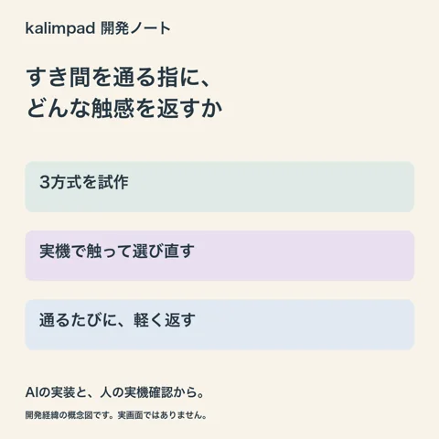
開発経緯の概念図
すき間を通る指に、どんな触感を返すか
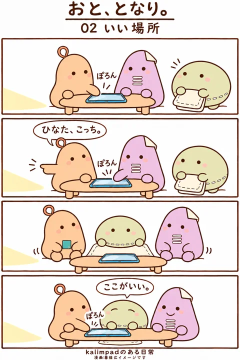
オリジナル日常4コマ漫画
おと、となり。 いい場所
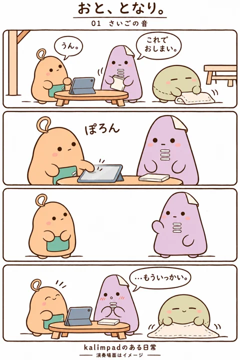
オリジナル日常4コマ漫画
おと、となり。 さいごの音
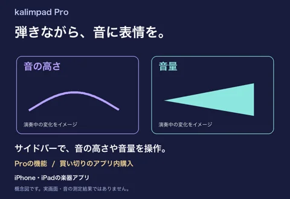
軌道と大判文字の演奏コントロール概念図
弾きながら、音に表情を。
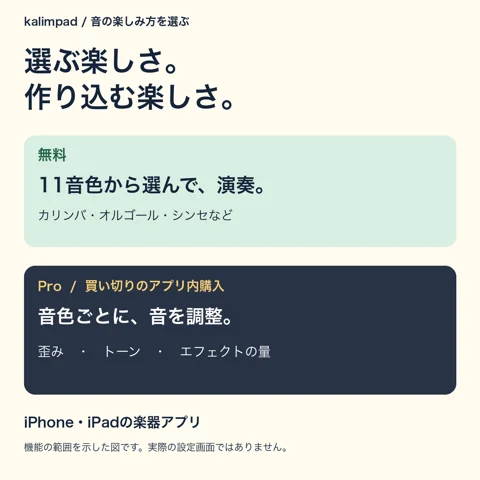
二段の音づくり選択マップ
選ぶ楽しさ。作り込む楽しさ。
墨絵とネオンの都市広告
スマホで、シンセを弾こう。
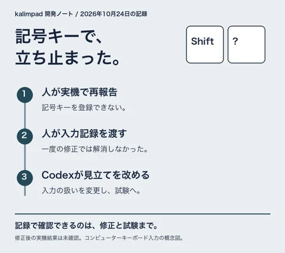
キーキャップと時系列の開発記録
記号キーで、立ち止まった。
粘土人形の立体絵本広告
オルゴールの音を、自分で弾く。
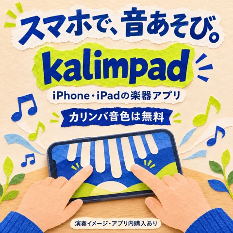
手元の切り紙コラージュ
スマホで、音あそび。
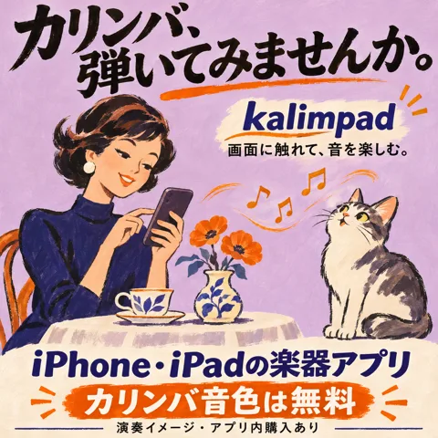
人物と猫のレトロ雑誌広告
カリンバ、弾いてみませんか。
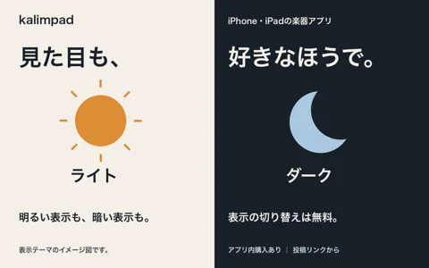
白黒の反転を生かす横長タイポグラフィ
見た目も、好きなほうで。
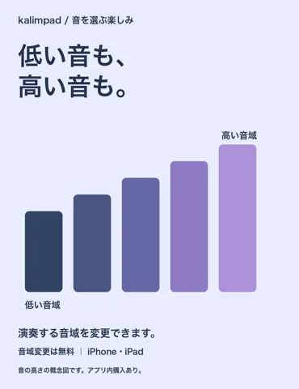
上下の音域を階段で示す縦長概念図
低い音も、高い音も。
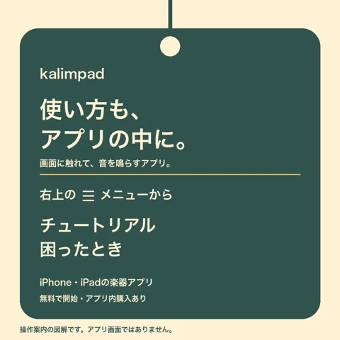
迷子札をモチーフにした案内カード
使い方も、アプリの中に。
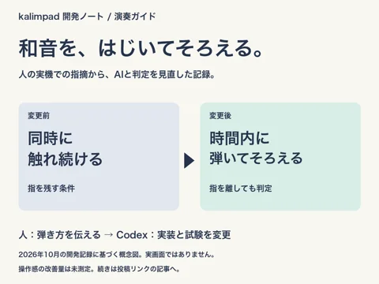
左右の判定条件を並べた開発記録
和音を、はじいてそろえる。
人物の舞台風ペン画広告
今日のソロは、スマホで。
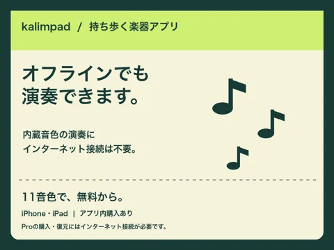
切符風タイポグラフィ
オフラインでも演奏できます。
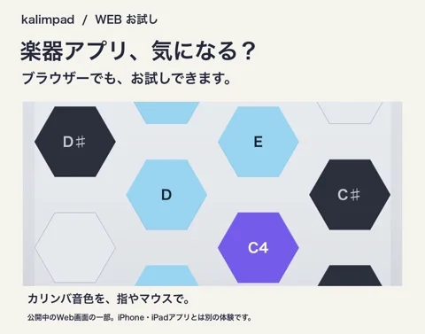
実画面を大きく見せる試奏案内
楽器アプリ、気になる？
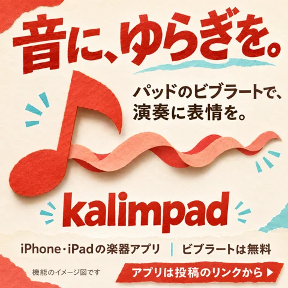
切り紙コラージュ
音に、ゆらぎを。
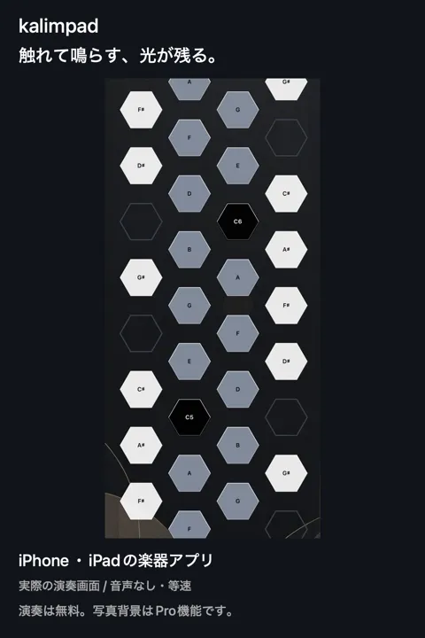
実演GIFの紹介用静止画
触れて鳴らす、光が残る。
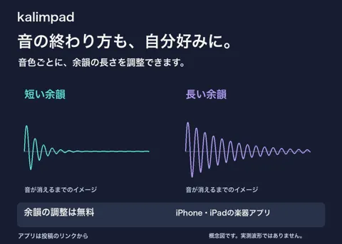
比較図
音の終わり方も、自分好みに。
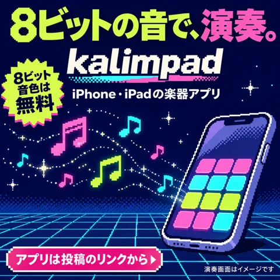
レトロ・ピクセル広告
8ビットの音で、演奏。
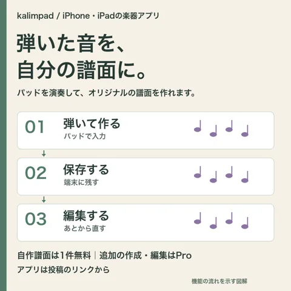
手順図
弾いた音を、自分の譜面に。
漫画広告
指を増やすと、和音に。
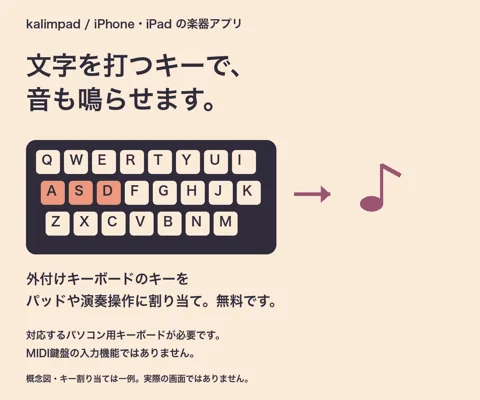
大きなキーと音符の接続概念図
文字を打つキーで、音も鳴らせます。
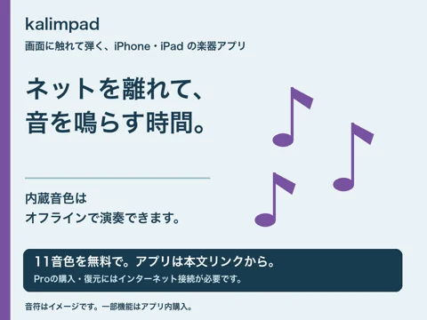
音符と余白のタイポグラフィ広告
ネットを離れて、音を鳴らす時間。
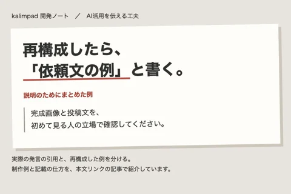
赤い校正線を引いた紙面広告
再構成したら、「依頼文の例」と書く。
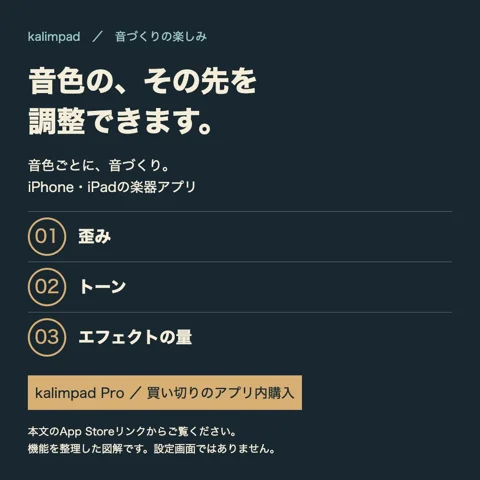
暗い青緑と金の正方形機能メニュー
音色の、その先を調整できます。
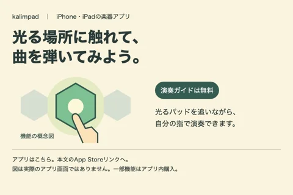
明るい横長の指と光の概念図
光る場所に触れて、曲を弾いてみよう。
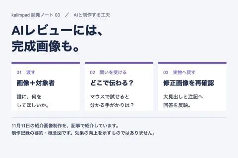
三段階の制作手順カード
AIレビューには、完成画像も。
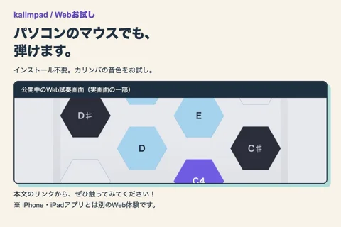
大見出しと実画面抜粋のブラウザー案内
パソコンのマウスでも、弾けます。
水色と朱色のレトロな人物版画広告
スマホで、カリンバ。
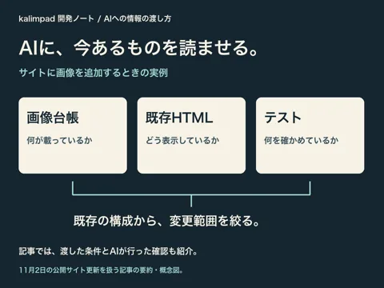
開発ノート・図解
AIに、今あるものを読ませる。
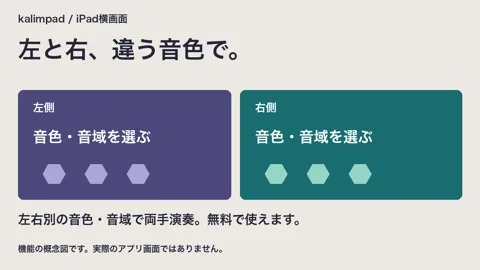
大きな左右2面を使う横長の機能紹介
左と右、違う音色で。
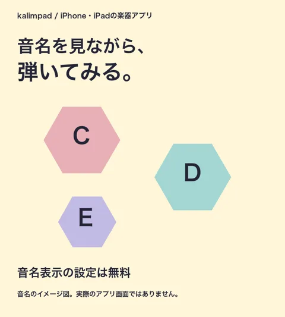
大きな音名を散りばめた明るい縦長ポスター
音名を見ながら、弾いてみる。
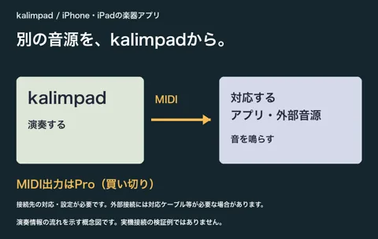
横長の信号フロー図
別の音源を、kalimpadから。
テラコッタとクリームの人物ガッシュ広告
オルゴールも、弾けます。
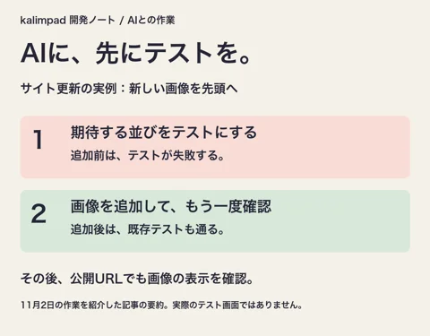
編集工程を縦に並べた実務ノート
AIに、先にテストを。
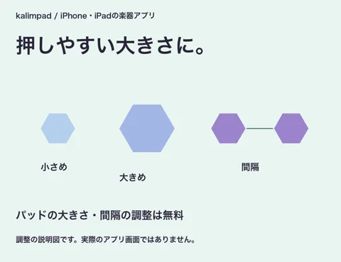
大きさと間隔を示す幾何学の説明図
押しやすい大きさに。
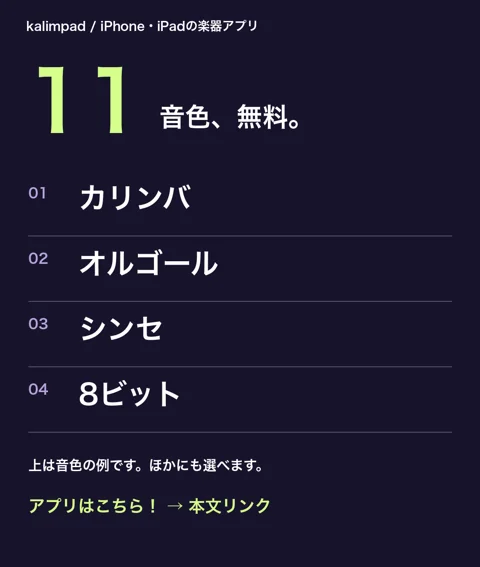
音色の例を大きく配置した縦長メニュー
11音色、無料。
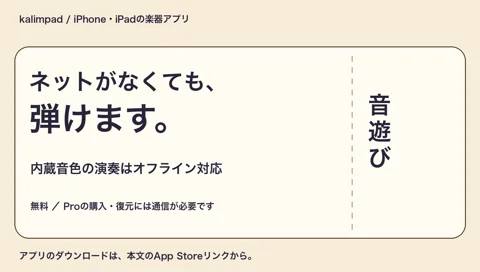
切符をモチーフにした横長タイポグラフィ
ネットがなくても、弾けます。
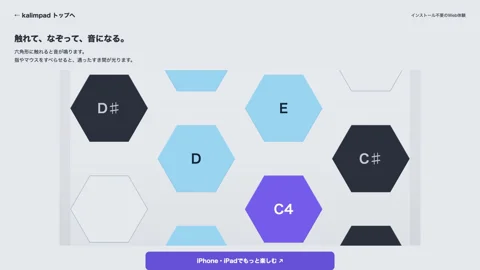
Web試奏の実画面
Webでも、ちょっとお試し。
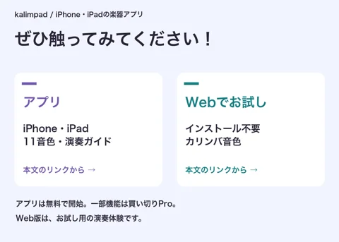
二つの入口を並べた明るい案内カード
ぜひ触ってみてください！
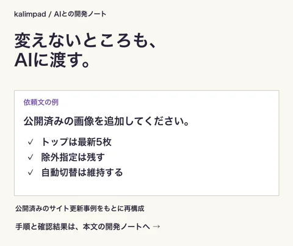
作業依頼の付箋とチェックリスト
変えないところも、AIに渡す。
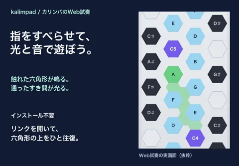
実画面を大胆に見せる横長の体験ポスター
指をすべらせて、 光と音で遊ぼう。
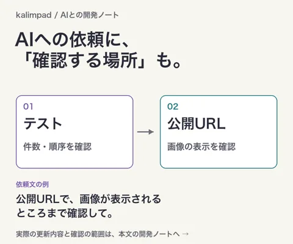
左右の検証カードをつなぐ編集図解
AIへの依頼に、 「確認する場所」も。
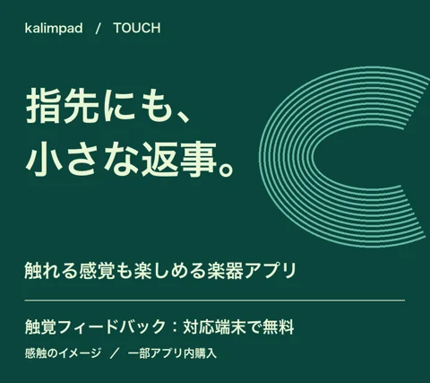
指紋の同心線による触覚のポスター
指先にも、小さな返事。
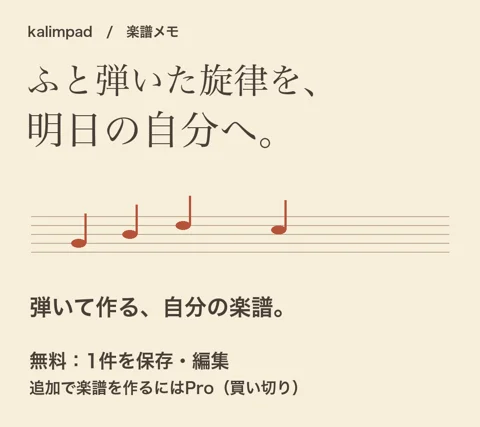
五線と余白のある手帳の見開き風
ふと弾いた旋律を、明日の自分へ。
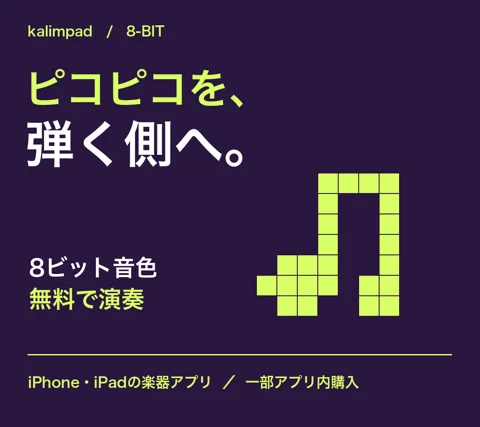
ピクセル音符のゲームポスター
ピコピコを、弾く側へ。
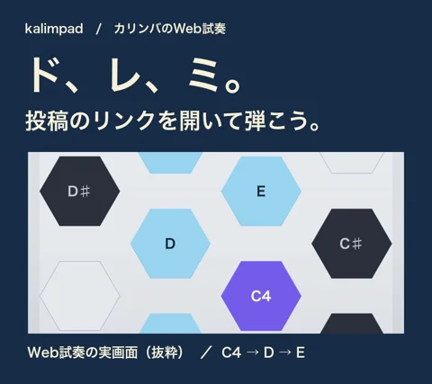
大判の音名と実画面の切り抜き
ド、レ、ミ。今夜はこの3音だけ。
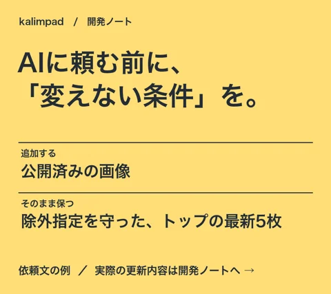
編集指示票を模した左右の対比
AIに頼む前に、「変えない条件」を。

Web試奏の実画面
インストールする前に、ひとつ音を。
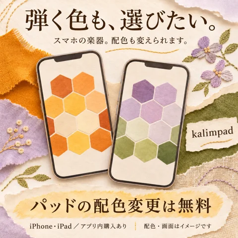
紙と刺繍のコラージュ
弾く色も、選びたい。
ミントと珊瑚色の三コマ漫画
ちょっと、音を鳴らしたい。
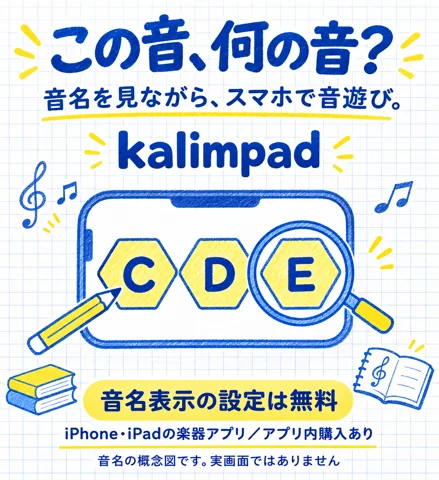
方眼ノートと色鉛筆の概念図
この音、何の音？
水彩の人物雑誌広告
夜の一曲を、指先で。
レトロSFのシルクスクリーン
スマホから、シンセの宇宙。
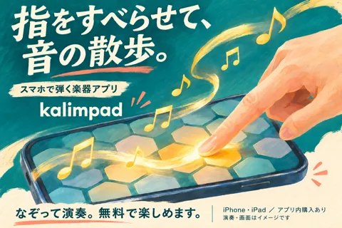
大胆なガッシュ画の演奏イラスト
指をすべらせて、音の散歩。
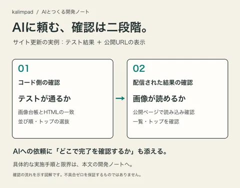
明るい二段階の比較図解
AIに頼む、確認は二段階。
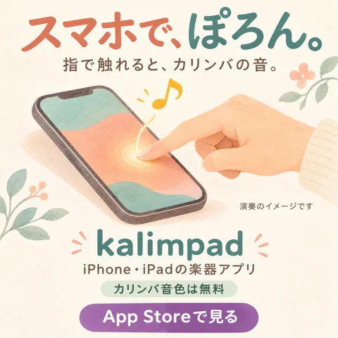
柔らかな紙の質感の演奏イラスト
スマホで、ぽろん。
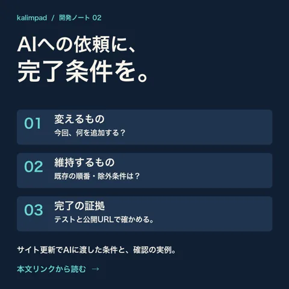
実務カードのタイポグラフィ
AIへの依頼に、完了条件を。
レトロな音の実験室ポスター
一音に、ゆらぎを。
小さな漫画の三段展開
思いついた音を、ひとつ残そう。
余白の大きい道具の概念図
指に合わせて、パッドの大きさを。
写真集の静物を使う雑誌広告
好きな景色を、演奏の背景に。
水彩の人物と音のリボン
ひとつ鳴らして、もうひとつ重ねる。
コミカルな机上の発見
いつものキーに、音の出番を。
大胆な横長コラージュ
左と右で、音の役を分けてみる。
編集デスクのチェックリスト
実装を頼む前に、3つだけ。
余白の広い抽象音響ポスター
音のあとにも、遊びがある。
舞台照明を使った幻想的な絵本広告
次の一音は、光が教えてくれる。
秋の旅行雑誌風イラスト
電波はなくても、音はある。
紙工作コラージュ
8bit音色
実装前のチェックカード
開発者のArchMap活用経験
情緒的な雑誌広告
11音色
紙のレシピ風タイポグラフィ
音色ごとの音づくり
暗色の信号フロー図
MIDI出力
明るい音名の比較図
キー変更
開発ノート風エディトリアル
システム構成の把握
雑誌風フォトコラージュ
写真背景
温かい四コマ漫画
広告・アカウント登録不要
ピクセルアート
8bit音色
余白のある抽象図解
音色ごとの余韻調整
切り絵コラージュ
なぞる・はじく操作
シックな夜の人物広告
オルゴール音色
粘土人形風のコミカルな3コマ
自作楽譜の作成・保存・編集
工業デザイン風の概念図
外付けコンピューターキーボードのキー割当
夜の音楽室を思わせる横長広告
iPad横画面の左右別音色・音域
温かい人物イラスト
演奏ガイド
布見本を使う雑誌広告
パッド配色変更
人物主役の映画ポスター・ファッション広告
11音色の選択
紙のコラージュとレコードジャケット風広告
複数パッドで和音を演奏
旅の情景を描くエディトリアル広告
オフライン演奏
演奏ガイド
なぞって、はじいて、音になる。
アメコミ